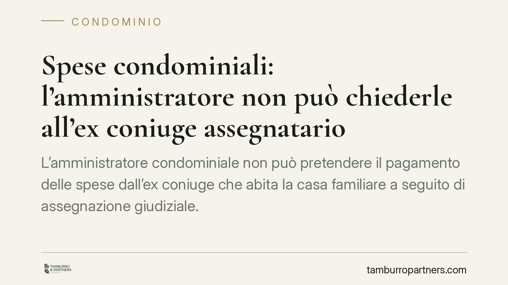

Spese condominiali: l'amministratore non può chiederle all'ex coniuge assegnatario
L'amministratore condominiale non può pretendere il pagamento delle spese dall'ex coniuge che abita la casa familiare a seguito di assegnazione giudiziale. La Cassazione ribadisce un principio chiaro: obbligato verso il condominio resta il proprietario dell'immobile. Una pronuncia che riguarda migliaia di nuclei separati e gli amministratori che gestiscono morosità complesse.

Il caso
Un amministratore aveva agito per il recupero delle quote condominiali nei confronti dell'ex coniuge che occupava l'appartamento in forza di provvedimento di assegnazione della casa familiare. L'immobile, però, era di proprietà esclusiva dell'altro coniuge. La Cassazione ha confermato che l'azione era mal indirizzata: l'occupante assegnatario non è il debitore delle spese condominiali.
La questione tocca un punto pratico ricorrente. Dopo la separazione o il divorzio, il giudice può assegnare la casa familiare al genitore con cui restano i figli, anche se non ne è il proprietario. Ne nasce una situazione in cui chi abita l'immobile non coincide con chi ne detiene la titolarità.
Inquadramento normativo
L'art. 1123 del Codice civile stabilisce che le spese per la conservazione e il godimento delle parti comuni sono sostenute dai condòmini in proporzione al valore della proprietà di ciascuno. La norma àncora l'obbligazione alla titolarità del diritto reale: è proprietario, e quindi condòmino, chi vanta la proprietà dell'unità immobiliare.
L'assegnazione della casa familiare attribuisce all'ex coniuge un diritto personale di godimento, opponibile ai terzi se trascritto, ma non lo trasforma in proprietario. L'assegnatario non acquista la qualità di condòmino e, di conseguenza, non assume la posizione di debitore verso il condominio per le quote ordinarie. Il rapporto interno tra ex coniugi — su chi debba sopportare in via definitiva il costo — è materia diversa, regolata dai provvedimenti del giudice della crisi familiare, e non riguarda l'amministratore.
La distinzione tra titolarità del diritto reale e mero godimento è il cardine della decisione: il condominio dialoga con il proprietario, non con chi occupa l'immobile.
Implicazioni pratiche
Per l'amministratore il messaggio è netto. La richiesta di pagamento e l'eventuale decreto ingiuntivo vanno indirizzati al proprietario risultante dai registri immobiliari, non all'occupante. Agire contro l'ex coniuge assegnatario espone al rigetto della domanda e al rischio di condanna alle spese di lite.
Per il proprietario non residente la conseguenza è altrettanto chiara: resta lui l'obbligato verso il condominio, anche se non utilizza l'immobile e anche se l'ex coniuge vi abita. Eventuali pretese verso l'ex partner andranno fatte valere in sede separata, secondo gli accordi o i provvedimenti relativi alla crisi familiare.
Per l'ex coniuge assegnatario la pronuncia evita richieste dirette dall'amministratore, ma non cancella la possibilità che il proprietario, dopo aver pagato, agisca nei suoi confronti se così previsto dal titolo che regola i rapporti tra i due.
Una precisazione: il discorso riguarda le spese ordinarie verso il condominio. La ripartizione interna tra chi gode e chi possiede l'immobile — ad esempio tra spese di gestione corrente e interventi straordinari — può seguire regole proprie nei rapporti tra le parti, ma non modifica chi è il soggetto obbligato verso l'ente di gestione.
Cosa fare in concreto
- Verifica la titolarità prima di agire: l'amministratore controlli la visura catastale e i registri immobiliari per individuare il proprietario effettivo, unico legittimato passivo del recupero quote.
- Indirizza decreto ingiuntivo e diffide al proprietario, non all'occupante, anche quando l'assegnatario è l'unico presente in assemblea o l'unico reperibile.
- Aggiorna l'anagrafe condominiale con i dati del proprietario e annota separatamente l'eventuale assegnatario, distinguendo titolarità e godimento.
- Se sei proprietario non residente, monitora i pagamenti delle quote: la morosità ricade su di te a prescindere dall'uso dell'immobile.
- Regola per iscritto i rapporti interni tra ex coniugi sulle spese, così da poter recuperare in via di rivalsa quanto eventualmente anticipato.
La pronuncia non introduce un principio nuovo, ma lo ribadisce con effetti concreti sulla gestione del contenzioso condominiale, sempre più frequente in presenza di nuclei familiari separati.
---
Contributo informativo a cura di Tamburro & Partners - Avv. Giuseppe Tamburro. Non costituisce parere legale.
Ogni condominio ha una storia a sé.
Se gestisci un'amministrazione e vuoi un confronto su una specifica questione condominiale, scrivi allo studio. Ti rispondiamo entro un giorno lavorativo.